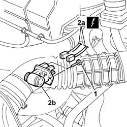

1088E20 RESISTOR FOR RADIATOR COOLING FAN - R + R
- Path
- Procedures > 10 ENGINE UNIT > 1088 ENGINE COOLING > 1088E COOLANT TEMPERATURE CONTROL DEVICES > 1088E20 RESISTOR FOR RADIATOR COOLING FAN - R + R
- Kind
- repair procedure (removal / refitting; the operation number is the code)
- Applies to
- engines: 2.0 16V, 2.8 JTD 8V; all production periods
- Interactive page
- https://sloeber94.github.io/elrnDB-fDct/en/#/244000972
Applies to: engines: 2.8 JTD 8V; all production periods
 Removing
Removing
 Refitting
Refitting1. Undo the retaining bolts.
2. Disconnect the electrical connections (2a) and remove the resistor (2b).
Description | Connector | |
|---|---|---|
2a | Engine fan adjustment resistance | O010B |
Description | Connector | |
|---|---|---|
2a | Engine fan adjustment resistance | O010A |

Applies to: engines: 2.8 JTD 8V; all production periods
Refitting
RemovingPosition the resistor in the housing.
Tighten the fixing bolts.
Connect the electrical connections.
Description | Connector | |
|---|---|---|
. | Engine fan adjustment resistance | O010A |
Description | Connector | |
|---|---|---|
. | Oil vapour heating resistance | O007B |
Applies to: engines: 2.0 16V; all production periods
Removing
Refitting1. Undo the bolts fixing the resistor.
2. Disconnect the electrical connections (2a) and remove the resistor (2b).
Applies to: engines: 2.0 16V; all production periods
Refitting
RemovingPosition the resistor and tighten the fixing bolts.
Connect the electrical connections.